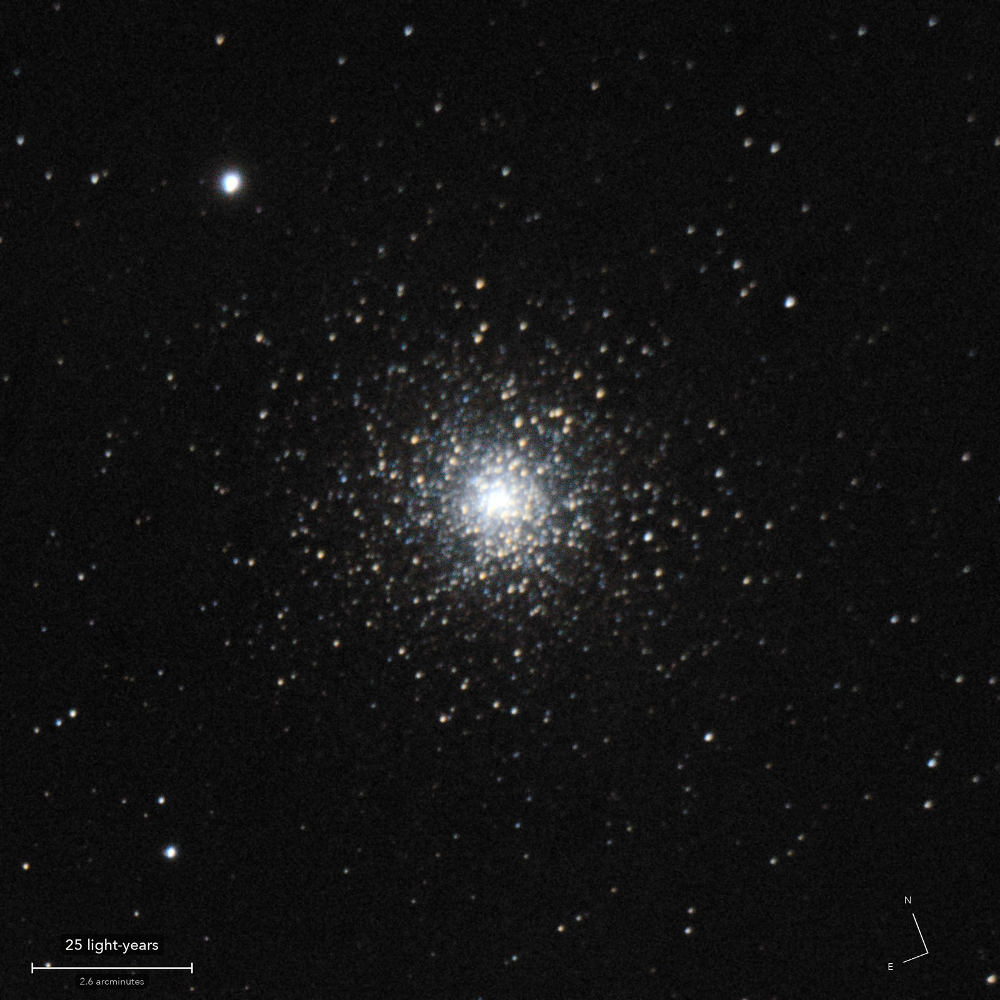

Messier 15
A globular cluster in Pegasus
A ball of well over a hundred thousand ancient stars, held together by their own gravity, in orbit round the Milky Way. At about 12 billion years old it is nearly as old as the universe.
What you are looking at

Swipe sideways to see the rest. Tap the picture for full size.
- Distance
- About 33,600 light-years
- This picture spans
- 156 light-years
- The light left
- In the last Ice Age, about when the oldest cave paintings in Europe were made
- For scale
- Near its centre the stars are packed thousands of times closer than round the Sun
For photographers
Under six minutes of light, straight after the telescope was refocused.
- Exposures
- 23 x 15 s at ISO 1600: 5.75 minutes
- Frames
- 26 taken, 23 kept. Two dimmed by cloud, one soft
- Sampling
- 0.388 arcsec per pixel, the sensor's own. Stars 4.4 arcsec across (half-flux), down from 7.0 before the refocus
- Field
- 16 x 16 arcmin, cropped from one sensor frame
- When
- 4 October 2026, just after midnight. 45 degrees up, no Moon yet
- Field rotation
- 1.1 degrees in 14 minutes, corrected in registration
- Calibration
- Dust and vignetting divided out with a flat built from the run's own sky. No darks
- Stacking
- RAW colour planes (no demosaic), hot pixels by 3 x 3 median, registered on stars with rotation, sigma-clipped mean. Core unclipped: 26 percent of full scale
- Finish
- Black 28 and white 214 of 255, S-curve 0.2. Saturation x 1.5; dark sky shown without colour and smoothed (bilateral, 2.5 px)
- Telescope
- Celestron 8SE Schmidt-Cassegrain with dew shield: 203 mm aperture, 2,084 mm focal length (measured by plate solve), f/10.3
- Camera
- Sony a6000, stock, at prime focus: APS-C 23.5 x 15.6 mm, 6000 x 4000, 3.9 micron pixels, RAW
- Mount
- Sky-Watcher EQ6-R, unguided. Set down 27 degrees off the pole; both axes driven from a pointing model fitted to plate solves. Residual drift about 0.1 arcsec per second
© 2026 Brad Gessler · Celestron 8SE (8 inch, 2,080 mm) and Sony a6000 on an EQ6-R · San Francisco Bay Area · 4 October 2026
Capture and mount: Observatory (Elixir on a Raspberry Pi 3). Stacking: numpy, OpenCV, rawpy. Plate solving: astrometry.net. Stacked from the camera's RAW frames. Nothing generated.
© 2026 Brad Gessler. The pictures and the words are his own; all rights reserved.